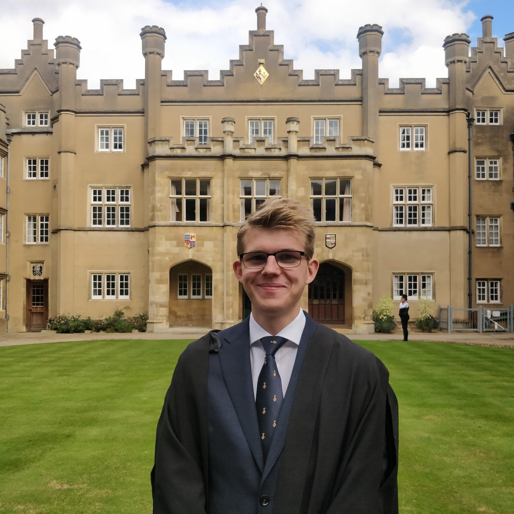
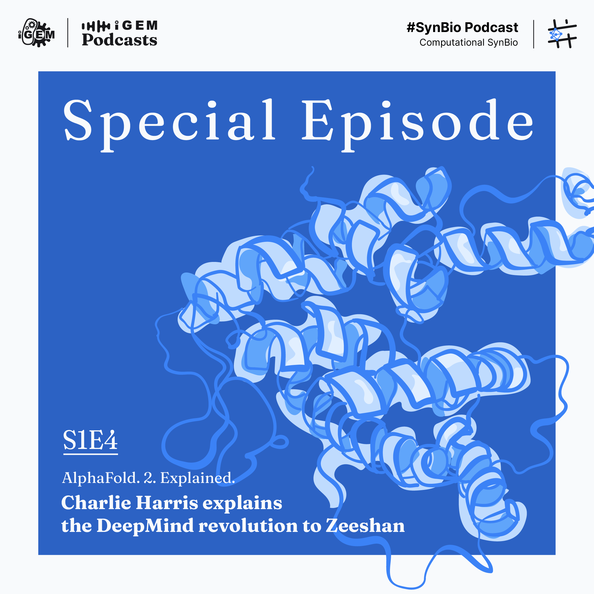

Hi there! My name is Charlie and I am a PhD Student at the Cambridge Centre for AI in Medicine where I am supervised by Prof Sir Tom Blundell and Prof Pietro Lio. I have a background in Biochemsitry and a passion for AI technology to solve problems in structural biology and drug discovery, in particular with generative modelling and Geomtric Deep Learning.
<<<<<<< HEAD
I am also keen about fostering closer relationships between students and industry, science communication and advising student groups. You can listen to my guest appeareance on iGEM's Synthetic Biology Podcast here! Feel free to reach out to me for internships, advising and consulting opportunities at cch57 [at] cam.ac.uk.
=======
I am also keen about fostering closer relationships between students and industry, science communication and advising student groups. You can listen to my guest appeareance on iGEM's Synthetic Biology Podcast here! Feel free to reach out to me for internships, advising and consulting opportunities at cch57@cam.ac.uk.
>>>>>>> parent of b10bf41 (update website)

AI Scientist Intern, BenvolentAI - 2021-2021
Work on self-supervised learning of protein structures with the Target ID team.
PhD Researcher, Cambridge Centre for AI in Medicine - 2021-Present
Research on AI/ML for strutural biology for drug design.
PhD, Computer Science - 2021-2025
University of Cambridge - Cambridge Centre for AI in Medicine, funded by AstraZeneca and GSK
MSc Bioinformatics and Theoretical Systems Biology - 2020-2021
Imperial College London - Centre for Intergrative Systems Biology and Bioinformatics
BSc Biochemsitry - 2017-2020
Imperial College London - Department of Life Sciences
Structure-based Drug Design with Equivariant Diffusion Models.
Arne Schneuing, Yuanqi Du, Charles Harris, Arian Jamasb, Ilia Igashov, Weitao Du, Tom Blundell, Pietro Lió, Carla Gomes, Max Welling, Michael Bronstein, Bruno Correia.
NeurIPS 2022 Machine Learning for Structural Biology Workshop, Under review at ICLR 2023. Link.
Graphein - a Python Library for Geometric Deep Learning and Network Analysis on Biomolecular Structures and Interaction Networks.
Arian Rokkum Jamasb, Ramon Viñas Torné, Eric J Ma, Yuanqi Du, Charles Harris, Kexin Huang, Dominic Hall, Pietro Lio, Tom Leon Blundell.
NeurIPS 2022 and ICML 2022 AI for Science Workshop. Link

2021
Geometric Deep Learning for structure-based drug design
Supervisors: Prof Michael Bronstein, Prof Bruno Correia (EPFL), Prof Pietro Lio (Cambridge)
Learning interpretable protein dynamics using Geometric Deep Learning
Supervisors: Prof Michael Bronstein, Prof Bruno Correia (EPFL)
Prediction of the effect of missense variants involved in ligand binding via docking
Supervisor: Prof Michael Sternberg
2020
Deriving structural explanations for protein thermal stability - Repository
Supervisor: Prof Michael Sternberg
2019
In silico protein function prediction from structural data
Supervisor: Prof Michael Sternberg

Graphein
I am currently contributing to the open source package Graphein whilst aims to democratise access to biological data to use in Geometric Deep Learning. Most of my work focuses on the protein graph submodule.

1st Imperial College AI in Drug Discovery Conference
Organised and chaired the first ever student-led conference dedicated to just AI in Drug Discovery.
I also had the honour to moderate 2 panel discussions. One focusing on the business aspects of running and AI in DD startups with the CEOs of LabGenius,
Biorelate, GlamourousAI and OneThree Biotech. The second was a science panel with Prof Sir Tom Blundell,
Prof Michael Bronstein and Dr Andreas Bender.

Imperial College Computational Biology Society
I founded and chaired the Imperial College Computational Biology Society for 2 year. The Society is a student-led group for those intereted in the intersection of biology and technology. In addition to the conference, we also organised regular webinars (DeepMind, BenevolentAI, Nvidia) and workshops to teach Life Scientists how to code.
I am a passionate believer in the importance of science communication and actively looking for opportunities to improve my skills. Please feel free to reach out to me if you would like a speaker with my background to appear on you outlet. Please see below for an example of my previous work.

Guest Appeareance - iGEM Synthetic Biology Podcast
In this episode, I try to explain how AlphaFold2 works to a general audience with only a biological background. I also discuss future areas in structural biology that DeepMind could be working on and generally what this breakthrought means for biological research.
Advisory Positions
Imperial Internation Directed Evolution Competition (iDEC) Team
Awards
Gold - International Chemistry Olympiad 2017 UK Round One
David Lean Scholar - Leighton Park School
Prefect - Leighton Park School
Extra Qualifications
Royal Areo Club certified solo glider pilot
GCSE Mandarin (A)
Volunterring
Ambassador - Helen Arkell Dyslexia Charity